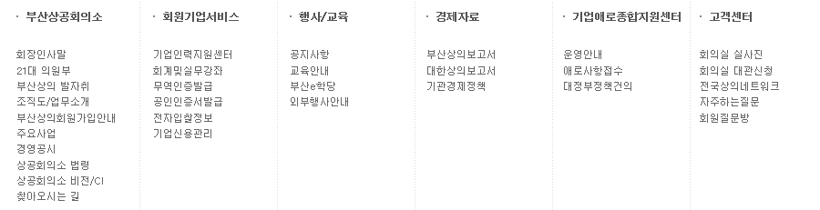

기본 언어 표시
주로 사용하는 언어를 명시해야 한다.
html 태그에 주 사용 언어 지정
웹 페이지에서 주로 사용하는 언어는 페이지 상단에 html 태그에 lang 속성을 이용하여 지정
< html lang="ko" > < html xmlns="http://www.w3.org/1999/xhtml" lang="ko" xml:lang="ko" > /* 한국어 */ < html lang="ko" > /* 영어 */ < html lang="en" > /* 일본어 */ < html lang="ja" > /* 중국어 */ < html lang="zh" >그는 한국어로
웹은 보편적으로 접근 가능한 것입니다.라고 말하였다.
그는 독일어로Web ist allgemein zugänglich이라고 말하였다.
그는 프랑스어로Web est accessible à tous이라고 말하였다.
사용자 요구에 따른 실행
사용자가 의도하지 않은 기능(새 창, 초점 변화 등)은 실행되지 않아야 한다.
초점 변화에 의해 맥락을 변화시키지 말고, 해당 인터페이스가 활성화(activate) 되었을 때 기능을 실행
보통 사용자는 해당 요소를 클릭하거나, 키보드의 엔터키를 누름으로서 기능이 실행될 것으로 예측함
- 새창 여는 기능을 버튼에 연계시킬 경우 사용자가 버튼을 클릭하거나 스페이스 바를 눌렀을 경우에만 새창이 열리게 함.
버튼에 onfocus(버튼에 포커스가 왔을때 실행) 속성을 이용해 새창열림 이벤트를 연계하면 안됨 - 여러 개의 페이지로 구성된 입력 서식(예:회원가입)에서 첫번째 입력 페이지 입력완료하고 다음 버튼 또는 완료 버튼으로 포커스를 이동하자마자 다음페이지로 자동으로 가도록 하면 안됨
반드시 사용자가 해당 버튼을 눌렀을 때에만 두번째 페이지로 이동 - 체크 상자를 선택만 했을 경우나 select 박스에서 포커스가 이동됨으로 페이지가 다시 로드되게 하면 안됨 (ex.우편번호 검색)
명확한 서식 제출(submit) 버튼 제공
submit 버튼을 쓰지 않고 자바스크립트로만 서식값이 전송되도록 하면 안됨
/* 잘못된 예 *//* 개선 */
목록 선택 상자(select) 제공시 반드시 선택값을 사용자가 확인하고 제출할 수 있도록 submit 버튼을 따로 제공해야 함.
새 창 열림을 사전에 알림
아무런 경고 없이 새 창이 열리게 되면, 시각 장애, 인지 장애, 학습 장애인들에게 혼란을 주게 됨 (의도치 않게 포커스가 이동되어 정보인식에 대한 혼란)
title 태그 이용
해운대구의회
css 이용
css를 이용해 해당 링크에 초점이 이동하거나 마우스 포인터가 위치했을 때 새창이 열릴 것이라고 알려줌
더 자세한 정보는 적용 기술 웹 사이트새 창에 열림.에 있습니다.
/* html */더 자세한 정보는 적용 기술 웹 사이트새 창에 열림.에 있습니다.
/* css */ a.info {position:relative;z-index:24;background-color:#ccc;color:#000;text-decoration:none} a.info:hover, a.info:focus, a.info:active {z-index:25;background-color:#ff0} a.info span {position: absolute;width: 0;overflow: hidden;} a.info:hover span, a.info:focus span, a.info:active span {display:block;position:absolute;top:1em; left:1em; width:12em;border:1px solid #0cf;background-color:#cff;color:#000;text-align: center}
팝업창 사용은 지양
페이지가 로드될 때 자동으로 팝업 창이 열리도록 한 경우는 사용자를 혼란스럽게 할 뿐만 아니라 시각장애인, 지적장애인(인지 능력이 떨어지는 사람), 지체장애인(운동 능력이 떨어지는 사람들)에게 웹 탐색을 어렵게 만드는 요인이 되므로 메인 페이지 안에 팝업존으로 대체.
대부분의 브라우저들이 팝업 창 차단 옵션이 있어서 실질적으로 팝업창을 이용한 광고, 홍보 효과도 떨어짐
콘텐츠의 선형화
콘텐츠는 논리적인 순서로 제공해야 한다.
콘텐츠를 의미 있는 순서로 배열
웹페이지의 콘텐츠는 마크업 언어(html)에서 논리적으로 작성
/* 잘못된 예시 */
- 부산상공회의소
- 회원기업서비스
- 행사/교육
- 경제자료
- 기업애로종합지원센터
- 고객센터
- 회장인사말 ...
부산상공회의소
- 회장인사말
- 21대 의원부
- 부산상의 발자취
- 조직도/업무소개 ...
스타일을 이용한 글자 간격 조정
강제로 공백을 넣어 글자 간격을 조정할 경우 단어로서의 의미가 달라지고 화면 낭독 프로그램에서는 다르게 발음하게 될 수도 있으며, 페이지 내에서 해당 단어를 검색할 수 없게되고, 검색엔진이나 번역 엔진에서도 다른 단어로 인식
css를 이용하여 조절
/* 개선 전 */ <th>비 고</th> /* 개선 후 */ <th style="letter-spacing:4em;">비고</th>
표의 구성
표는 이해하기 쉽게 구성해야 한다.
표 제목을 caption으로 제공
| 순번 |
|---|
| 공영주차장 |
표의 구조 또는 내용에 대한 요약을 summary로 제공 예시 사이트 바로가기
| 구분 | 직급 | 직종 | 2010년 | 2011년 | 2012년 | 2013년 |
|---|---|---|---|---|---|---|
| 계 | 148 | 141 | 151 | 170 | ||
| 1 | 임원 | 임원 | 4 | 4 | 4 | 4 |
| 2 | 1급(일반직) | 관리 | 11 | 11 | 10 | 9 |
| 3 | 2급(일반직) | 사무 | 18 | 16 | 15 | 18 |
| 4 | 2급(일반직) | 기술 | 7 | 7 | 7 | 6 |
| 5 | 2급(기능직) | 기능 | 1 | 1 | 1 | 1 |
| 6 | 3급(일반직) | 사무 | 15 | 15 | 16 | 19 |
| 7 | 3급(일반직) | 기술 | 11 | 11 | 9 | 11 |
| 8 | 3급(기능직) | 기능 | 1 | 1 | 1 | 1 |
| 9 | 4급(일반직) | 사무 | 16 | 19 | 20 | 26 |
| 10 | 4급(일반직) | 기술 | 7 | 9 | 9 | 9 |
| 11 | 4급(기능직) | 기능 | 1 | |||
| 12 | 5급(일반직) | 사무 | 22 | 18 | 20 | 12 |
| 13 | 5급(일반직) | 기술 | 9 | 8 | 7 | 3 |
| 14 | 5급(기능직) | 기능 | 1 | 1 | 1 | 1 |
| 15 | 6·7급(일반직) | 사무 | 17 | 14 | 22 | 35 |
| 16 | 6·7급(일반직) | 기술 | 5 | 3 | 6 | 12 |
| 17 | 6·7급(기능직) | 기능 | 3 | 3 | 3 | 2 |
표의 헤더 셀과 데이터 셀의 관계 정의 예시 사이트 바로가기
| 구 분 | 2007 결산 |
2008 결산 |
2009 결산 |
2010 결산 |
|||
|---|---|---|---|---|---|---|---|
| 수입 | 정부지원 | 직접지원 | 출연금 | - | - | - | - |
| 출자금 | - | - | - | - | |||
| 보조금 | 2,235 | 1,935 | - | - | |||
| 간접지원 | 위탁수입 | - | - | - | - | ||
| 독점수입 | - | - | - | - | |||
| 소계 | 2,235 | 1,935 | - | - | |||
| 자체수입 | 순수자체수입 | 197,407 | 242,620 | 186,955 | 244,442 | ||
| 차입금 | 53,240 | 153,713 | 830,000 | 160,000 | |||
| 전기이월 | 20,514 | - | 84,314 | 63,464 | |||
| 기타 | 2,917 | - | 15,091 | 27,303 | |||
| 소계 | 274,078 | 396,333 | 1,116,360 | 495,209 | |||
| 수입합계 | 276,313 | 398,268 | 1,116,360 | 495,209 | |||
| 지출 | 사업비 | 96,678 | 210,420 | 878,362 | 196,416 | ||
| 인건비 | 8,767 | 10,270 | 7,919 | 8,613 | |||
| 경상운영비 | 36,734 | 45,119 | 35,460 | 40,260 | |||
| 차기이월 | - | 43,044 | 63,465 | 100,277 | |||
| 차입금상환 | 99,426 | 61,926 | 69,955 | 66,900 | |||
| 배당 | 2,496 | - | 5,310 | 7,930 | |||
| 기타(지급이자등) | 32,212 | 27,489 | 55,889 | 74,813 | |||
| 지출합계 | 276,313 | 398,268 | 1,116,360 | 495,209 | |||
레이블 제공
입력 서식에는 대응하는 레이블을 제공해야 한다.
label for 속성값과 input id 속성값 일치
오류 정정
입력 오류를 정정할 수 있는 방법을 제공해야 한다.
입력 값 또는 형식에 대한 예시 제공
입력 서식에 어던 순서로 무슨 값을 넣어야 하는지 정확한 설명을 미리 해줌으로써 사용자들마다 다르게 해석할 수 있는 여지를 줄여 주어야 한다.
예) html5 - placeholder 속성
서버측 오류 검사
서식 값에 대한 적합성 검사를 자바스크립트로만 운용하는 것은 위험하고 접근 가능하지 않다.
사용자가 자바스크립트를 사용하지 않거나 꺼놓은 경우에도 서버측에서 하는 검사를 생략할 수 없기 때문에 < form action="" > 값으로 반드시 서버측에 url을 넣어주어야 함.
마크업 오류 방지
마크업 언어의 요소는 열고 닫음, 중첩 관계 및 속성 선언에 오류가 없어야 한다.
- 여는 태그와 닫는 태그의 정확한 사용 - 싱글태그는 dtd에 상관없이 무조건 닫는 것이 작업 기준.
- 속성 이름과 속성 값의 정확한 사용
(x) (O)
- 태그의 정확한 중첩관계
중첩관계가 명확해야 한다
(x)중첩관계가 명확해야 한다
(O) - 표준에 부합하는 태그와 속성 이름, 값 사용 - 특수한 경우가 아니라면 css핵이나 비표준 태그는 사용하지 않는다.
마크업 언어의 검사
- w3c 사이트 : http://validator.w3.org
- 파이어폭스 : web developer(부가기능)
웹 애플리케이션 접근성 준수
콘텐츠에 포함된 웹 애플리케이션은 접근성이 있어야 한다.
웹 애플리케이션의 대체 콘텐츠 제공
플러그인을 사용하는 웹 애플리케이션을 제공할 때 웹 애플리케이션과 동등한 기능을 수행할 수 있는 대체 콘텐츠를 함께 제공한다.
플래시 플러그인
플러그인 사용이 가능하지 않은 환경에서는 동당한 기능을 하는 이미지로 되어 잇는 콘텐츠 제공 예시 사이트 바로가기

용도, 목적지, 종류, 사용법에 맞는 사용자 인터페이스 요소 사용
링크 구현시 a태그를 이용하지 않고 div나 span태그에 자바 스크립트 클릭 이벤트를 사용하여 구현하면 키보드 초점을 받지 못하거나 이를 링크로 인식하지 못함
서식 버튼 요소를 구현하는데 input 태그를 사용하지 않고 img 태그나 a 태그등을 사용하여 구현하여도 비슷한 문제가 발생